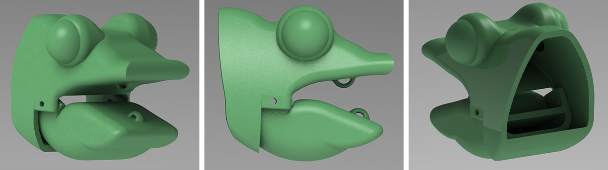
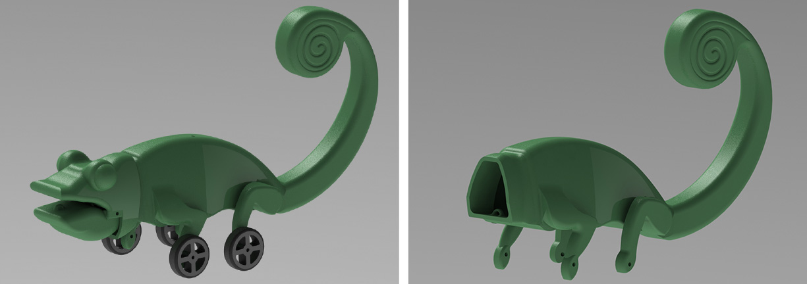

CHAMELEON LIZARD ROBOT
The Chameleon Lizard Robot, developed for Cairo University for biotechnology research
About Project
The Chameleon Lizard Robot is an innovative project designed for biotechnology at Cairo University, aimed at simulating the chameleon's unique color-changing ability. The robot is designed with a 3mm thickness, just like a real chameleon, and is equipped with advanced technology to imitate the creature's natural behavior.
One of the key features of the Chameleon Lizard Robot is its ability to change colors using RGB LED lights. This technology mimics the way chameleons change colors to blend into their environment or to communicate with other chameleons. With the RGB LED lights, the robot can mimic any color in the chameleon's color spectrum, allowing it to blend in with its surroundings or display different colors for communication purposes.
In addition to the color-changing feature, the robot also has the ability to open its mouth using DC motors. This feature mimics the way chameleons use their mouth to capture prey or intimidate predators. The opening and closing of the mouth is controlled by the robot's software.
Design
Chameleons have a unique mechanism in their mouths called the hyoid apparatus, which includes a set of bones and muscles that allow the chameleon to project its tongue and catch prey. The hyoid apparatus also includes a pair of rings in the mouth, which are connected to muscles that move the jaw. When the muscles contract, the rings move and pull the jaw down, allowing the chameleon to open its mouth and catch its prey.
In the Chameleon Lizard Robot project, this mechanism is replicated using a thread and motor system. The thread is attached to the rings in the robot's mouth, and when the motor is activated, it pulls the thread, causing the rings to move and the jaw to open. By mimicking the mechanics of the chameleon's hyoid apparatus, the Chameleon Lizard Robot can replicate the movement of a real chameleon's mouth in a controlled environment, allowing researchers to study and manipulate this behavior.

The body of the Chameleon Lizard Robot is designed to be divided into two equal parts, which can be attached and detached as needed. This feature makes it easy to access the internal components of the robot for maintenance or upgrades. Additionally, the body has a thickness of 3mm, which allows it to be transparent enough for the LED lights to penetrate it and change color.
The legs of the robot are equipped with holes, which allow for easy assembly of the wheels. This feature makes it simple to replace or upgrade the wheels as needed. The wheels are driven by DC motors, which allow the robot to move in a controlled and precise manner. The combination of a transparent body and movable wheels makes the Chameleon Lizard Robot an ideal tool for studying the behavior and movement of chameleons in a controlled environment.
Fabrication
The fabrication of the Chameleon Lizard Robot was done using 3D printing technology. 3D printing allowed for precise and accurate production of the complex shapes and structures needed to replicate the mechanics of the chameleon's body. This also made it possible to create a lightweight and durable robot with intricate details, such as the rings in the mouth and the holes in the legs for the wheel assembly.
Testing
The robot's software is programmed to change the color of the lights through a series of commands. The robot is then observed under different lighting conditions to determine the effectiveness of the LED lights in changing color.
During testing, the robot's body is also closely observed to ensure that the color-changing effect is even and consistent across the entire surface. Any discrepancies or irregularities in the color-changing process are noted, and adjustments are made to the LED lights or the software as needed.